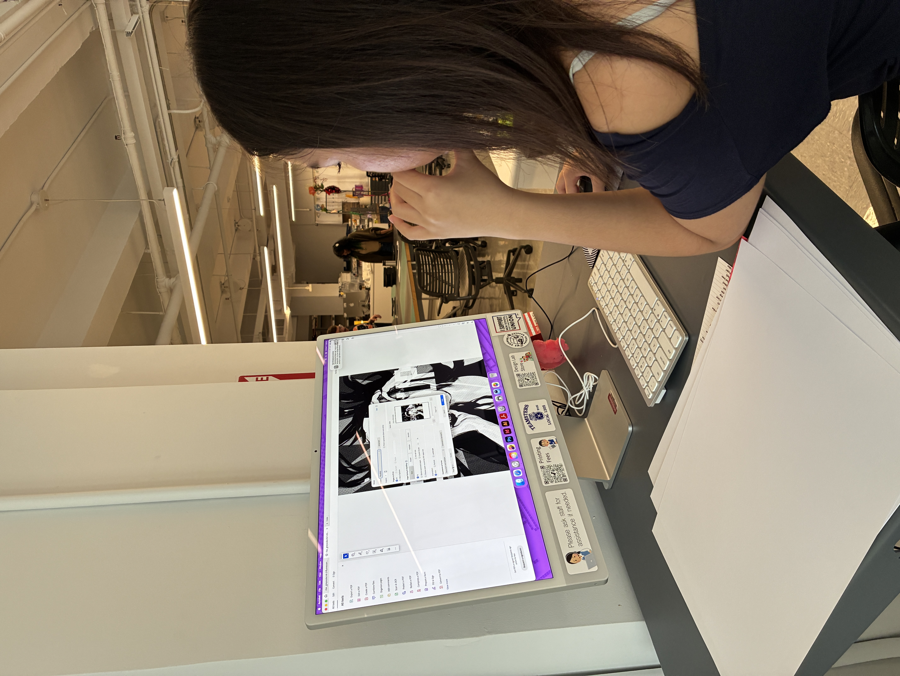
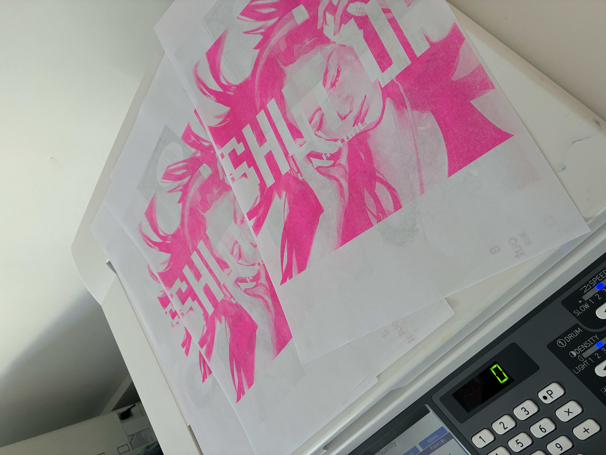
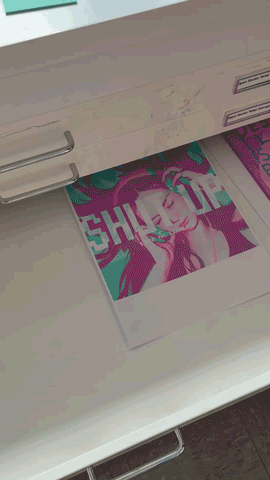

L was assigned to nicomoji, one of the new riso printers at the design lab.

somehow, L changed the ink drums without me noticing - so i would like to say that was a success.
L decided to manually half-tone her illustration.
in the beginning, L had difficulties with the sizing of her illustration.
it printed out smaller than her liking, so she changed some settings.

after changing the settings, the illustration printed out as large as she anticipated.
she then went on to flush out the flo pink layer, eventually moving on to master-make for the mint layer.
L simply just repeated the process.

when asked about the results of her first risograph, she said "i love it!"
"i like how each print is not exactly the same - it makes it unique, and makes it less mass-produced even though it's kind of mass-produced."
"and the colors came out really good!"
when asked if she would risograph again, she said "yeah!"
"i made a drawing for fun and i thought it would be fun to risograph it - since the colors would turn out so nice!"